- Módulo: Sistemas Operativos
- Título del trabajo Registro de eventos local
- Componentes del grupo: Abel García García
- Curso Académico: 2013/2014
- Fecha de entrega: 12 de Junio de 2014
Activamos unas directivas de seguridad, para auditar los inicios de sesión al sistema (Correctos e incorrectos)
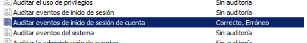
Buscar en el sistema, la herramienta visor de sucesos. Comprobar cómo se registran los eventos anteriores
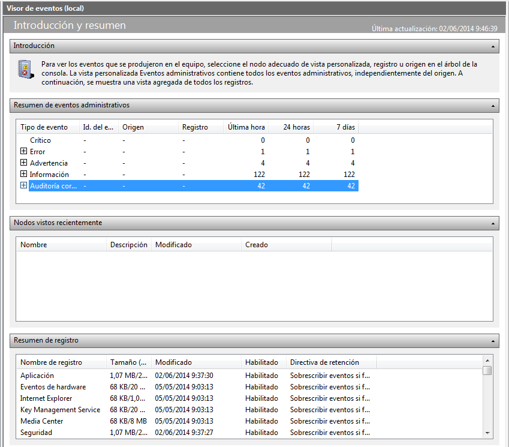
registro
- Instalar el programa Webmin.
- Descargar el paquete deb de la web de Webmin
- Para instalarlo usamo dpkg:"dpkg -i webmin_1.690_all.deb"
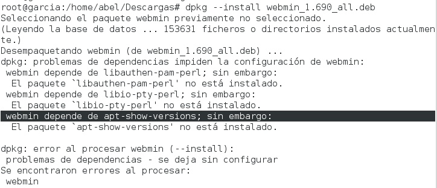
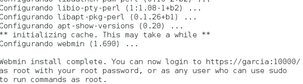
- Para iniciar el servicio Webmin, ejecutamos: "/etc/init.d/webmin start"
- Para acceder al programa Webmin, abrimos un navegador web y ponemos como URL: "https://garcia:10000"
- Vamos a analizar los ficheros de log con la herramienta anterior. Para ello vamos a las opciones del menú "System -> System Log".
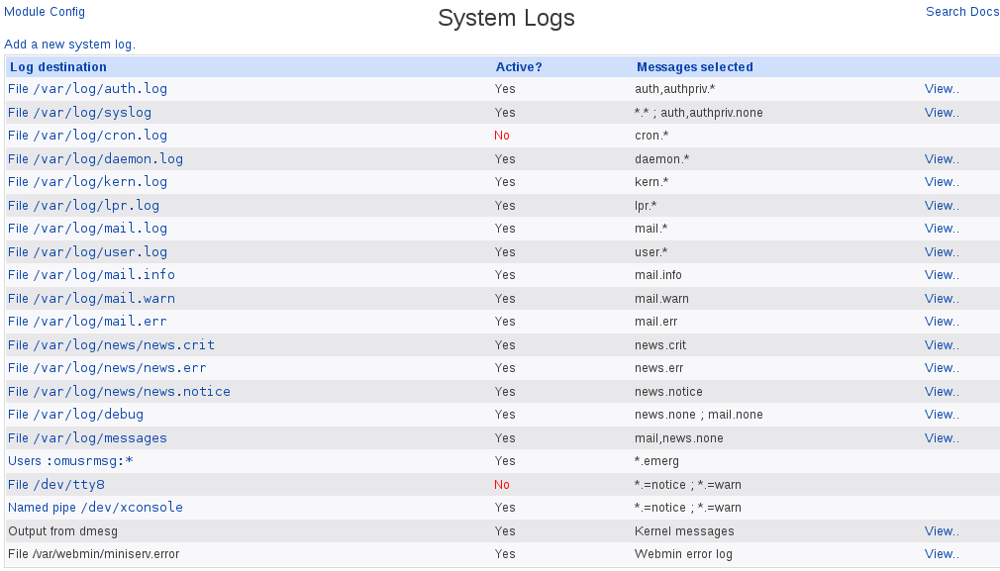
- Configuración de Syslog
- Consultar el fichero /etc/rsyslog.conf
- Añadir la siguiente línea al fichero de configuracion /etc/rsyslog.d/50-default.conf:
- local0.* /var/log/nombredelalumno/prueba-local.log
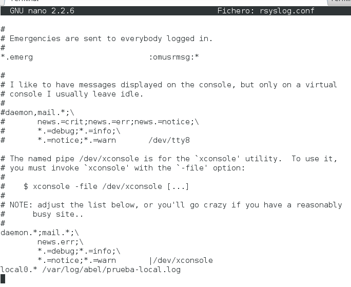
- Con el usuario root, crear el fichero /var/log/abel/prueba-local.log vacío
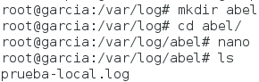
- Ahora debemos reiniciar el servicio rsyslog, para que se recargue la nueva configuración.
- /etc/init.d/rsyslog stop
- /etc/init.d/rsyslog start
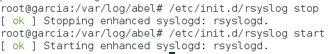
- Comprobar Rsyslog
- cat /var/log/nombredelalumno/prueba-local.log: Esto nos muestra que el fichero de log está vació por el momento
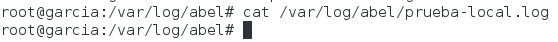
- Crear varios registros mediante el comando logger, usando varias prioridades diferentes y otros valores. Por ejemplo, probar los parámetros de logger -i, -t, etc.
- Consultar los mensajes registrados, e indicar sobre un ejemplo el significado de cada campo de una línea concreta del log
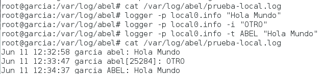
- Fichero de configuración principal es /etc/logrotate.conf. Además existen ficheros de configuración auxiliares en /etc/logrotate.d.
- Ahora vamos a configurar logrotate para generar rotaciones de nuestro fichero de log. Para ello crearemos el fichero /etc/logrotate.d/abel y ponemos:
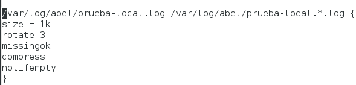
- Vamos a generar muchos mensajes de log en el fichero de registro de eventos:
- Podemos invocando el comando siguiente para aumentar el tamaño del registro de log con la información contenida en un fichero de texto: logger -p local0.notice -t ETC-MOTD -f /etc/motd
- Comprobar que el fichero de log ha crecido de tamaño
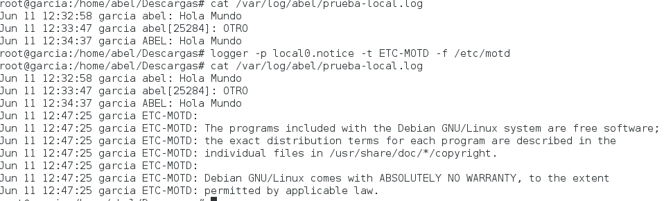
- Para que se dispare la rotación de log (logrotate) automáticamente podemos reiniciar el equipo. Sin reiniciar el equipo, podemos ejecutar manualmente el programa de rotación logrotate de la siguiente forma: /usr/sbin/logrotate -f /etc/logrotate.conf
- Comprobar que el fichero cambia de tamaño, y que efectivamente se ha producido la rotación de los ficheros de log.
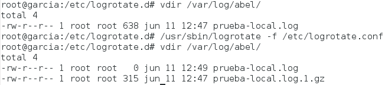